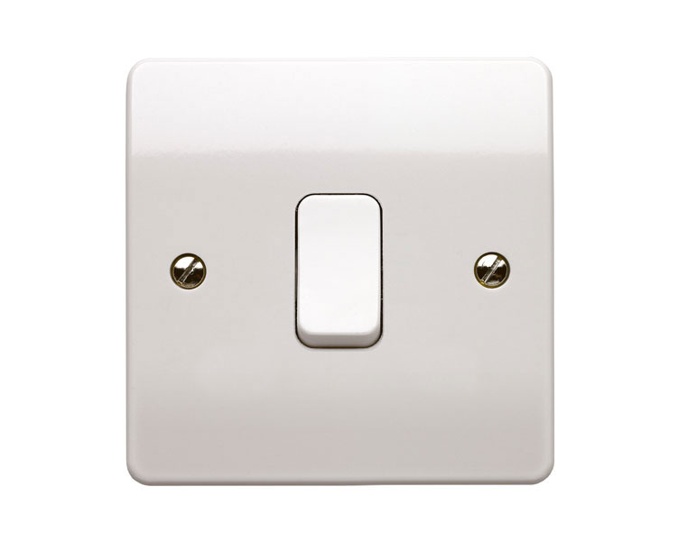

class: center, middle, inverse # Cómo crear mejores usuarios de SIG --- class: center, middle # Tenemos malos usuarios --- class: center, middle # Podemos "guiar" a los usuarios. --- class: center, middle # 1) El software --- class: center, middle # Hacer interfaces de usuario más difíciles --- class: center, middle # "Programming today is a race between software engineers striving to build bigger and better idiot-proof programs, and the Universe trying to produce bigger and better idiots. So far, the Universe is winning." -Rick Cook- --- class: center, middle # ¿User friendly? --- class: center, middle # UI/UX --- class: center, middle  --- class: center, middle <img src="./bomba.jpg" width="100%"/> --- class: center, middle # Las interfaces de usuario no deben ser fáciles de usar. Deben ser eficaces. --- class: center, middle # El cliente no siempre tiene la razón --- class: center, middle # "The three most dangerous things in the world are a programmer with a soldering iron, a hardware type with a program patch and a user with an idea." -Rick Cook- --- class: center, middle # El objetivo no es que el usuario sea capaz de usar el software, sino que sea capaz de obtener un resultado riguroso y de calidad con él. --- class: center, middle # 2) La documentación --- class: center, middle # Escribir menos documentación --- class: center, middle # La documentación trata sobre el software. --- class: center, middle # Ayudar menos en listas de correo --- class: center, middle # El objetivo no es que el usuario sea capaz de usar el software, sino que lo *entienda* y aprenda a utilizarlo. --- class: center, middle # En resumen, ayudemos a los usuarios a mejorar. --- class: center, middle, inverse # ¡Gracias! ## Víctor Olaya ## volaya@boundlessgeo.com